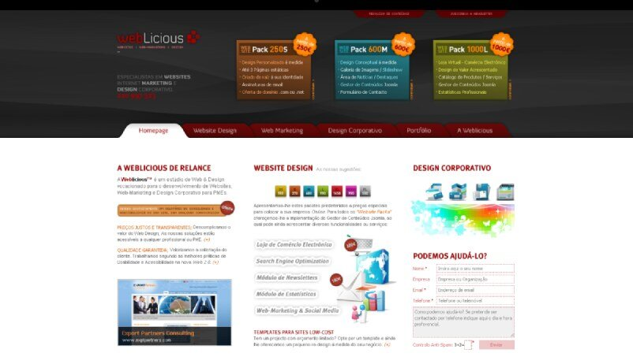
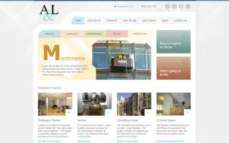
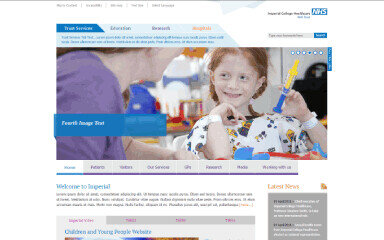
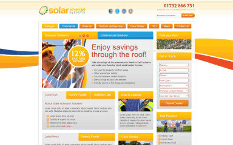
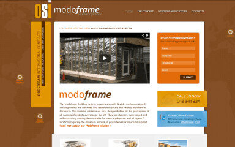

WebLicious: ten years of owning the whole product.
My own web studio: selling, scoping, designing and building for more than 50 clients in Portugal and the UK.
Role
Founder: strategy, design, front-end and marketing
Team
Me, and two contributors I recruited and mentored
Duration
2008–2018
Outcome
50+ clients over ten years. The regular accounts were sold to a trusted competitor, so every client kept their service.

The studio's website: three fixed packs at the top, services below.
01
Context
In 2008 most small businesses in Portugal had no website, and the financial crisis pushed them to look for cheaper ways to find customers.
I had spent almost two years in London building accessible websites for NHS organisations. Back in Porto, I started a studio and kept doing UK work from Portugal.
02
Problem
Small businesses needed to be online and didn't know what to ask for, what it should cost, or who to trust with it.
The crisis made the timing right: businesses were looking for cheaper, recession-proof ways to reach customers, and most of them were starting from nothing online.
03
My role and what I owned
Everything a product owner owns, as the founder.
The offer: value proposition, packs and pricing.
Sales and scoping of every project.
Design and build: more than 50 websites with content management and analytics.
Marketing: campaigns across social media, newsletters, pay-per-click and print.
People: I recruited and mentored two contributors.
04
Key decisions and trade-offs
Decision 1Three packs with a starting price
Each pack added one capability: a small static site from €250, a site the client could edit from €600, and an online shop from €1,000. A client knew what their budget bought before the first meeting.
Chosen
Fixed packs as a starting point, with anything beyond a pack scoped on top.
Rejected
A custom quote for every enquiry, with no price until after a meeting.
Trade-off
Fixed packs leave money on the table with bigger clients.
Decision 2Start every sale with discovery
Before proposing a pack, I asked what the business was trying to change. The answer shaped the site more than the feature list did.
Chosen
A discovery conversation before any proposal.
Why
"I need a website" was never the real need.

Alexander & Law, UK: property services, with a client area.

Imperial College Healthcare NHS Trust: home page design.
Decision 3Sell the accounts instead of closing
After nearly ten years I wanted to work in larger, multidisciplinary teams, with a deeper focus on UX and product.
Chosen
Sell the regular accounts to a trusted competitor, so every client kept their service.
Rejected
Winding the studio down and leaving clients to find someone new.

Solar Advanced Systems, UK: products and enquiries.

Modoframe: a building system, explained plainly.
05
Outcome
50+
clients in Portugal and the UK, including NHS organisations.
10 years
of running the studio, from the first sale to the exit.
2
contributors recruited and mentored.
06
What I took from it
Scope is a product decision, and every sale starts with discovery.
Both habits run through my product work today. So does the founder's reflex of asking what something costs, who pays for it and what happens after launch.
Let's talk about your product.
I'm based in Porto and work remotely, hybrid or on site.